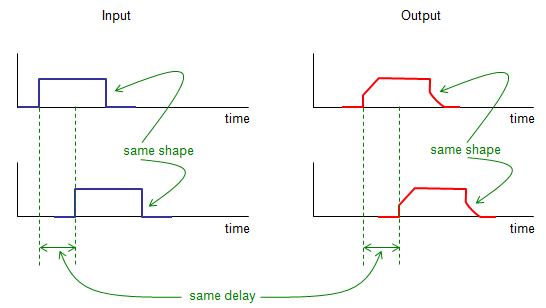

|
Communication - Time Invarience Home : www.sharetechnote.com |
|
Time Invarience means "The output from a system does not change depending on when you put the input to the system". It means that if you put a same input to the system, you would get the same output regardless of when you put the input to the system. This can be illustrated as shown below. Upper track shows an input at a certain time and the output from the system. Lower track shows the exactly same input but only time to go intot the system is different from the upper track. What is the difference in terms of output between upper track and lower track ? As you see, the output is the exactly same except the time you get it. It means just time-shifting input to this system does not change the output. This kind of system is called Time Invarient system.

Why the Time Invarience of a system is important ?
The answer is pretty obvious. Let's suppose you have a system which is Time Varient. You put a certain input and investigated all the characteristics of the input with a lot of time and effort. But you would not be able to reuse the result because when you reuse it, time is different and the result will be different as well. It is like... you have a computer. you would get different result from an exactly same program every time you run it.
The only case you can reuse the result is to make a lot of further efforts to find out the rules to show how the output changes depending on time. Unfortunately you cannot guarantee that you can find the rule. Even though you are lucky enough to find the rule, your model for the system will be extremly complicated.
|